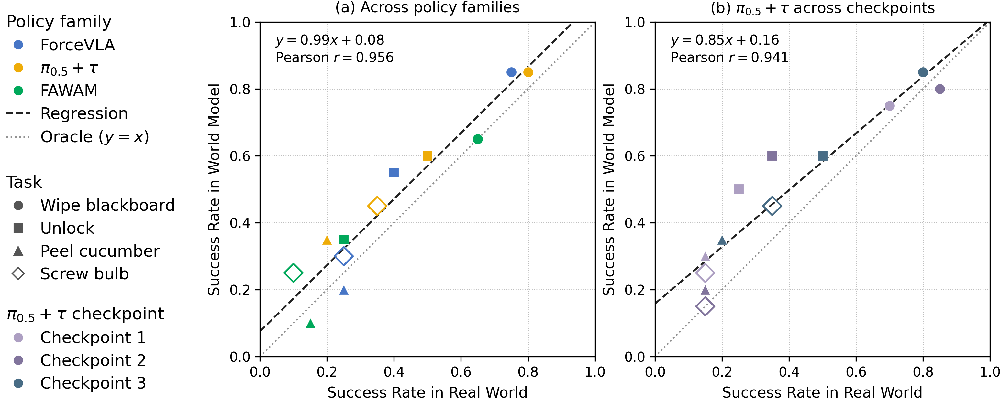

ForceWorldA Force World Simulator
with Visual and Force Feedback
Abstract
Many existing world models focus on predicting future visual observations conditioned on robot actions. In contact-rich manipulation, however, distinct physical outcomes can appear visually similar. In such cases, force signals can provide key information about how the robot interacts with its environment. Therefore, we present ForceWorld, an action-conditioned world simulator that provides visual and force feedback to support closed-loop rollouts and evaluation of force-aware policies. Built on a pretrained video diffusion transformer, ForceWorld jointly denoises video and force representations to generate multi-view RGB observations and external joint-torque. To capture evolving contact conditions and their dependence on robot actions, we therefore augment framewise torque embeddings with a temporal encoder and directly modulate torque denoising with action inputs. Across four real-world contact-rich manipulation tasks, ForceWorld reduces high-load torque prediction RMSE by 26.6% compared with TACO, while also outperforming both evaluated video-prediction baselines. The predicted feedback enables closed-loop policy rollouts over minute-scale task horizons. This supports downstream policy evaluation, with success rates strongly correlated with those in real-world execution (Pearson r=0.956).
Seeing motion. Predicting force.
Four manipulation tasks. Synchronized visual and joint-torque predictions.
The joint-torque visualization for this task has not been added yet.
Policy evaluation with a world model
